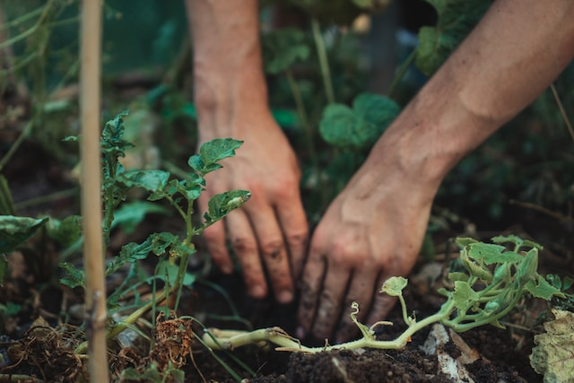
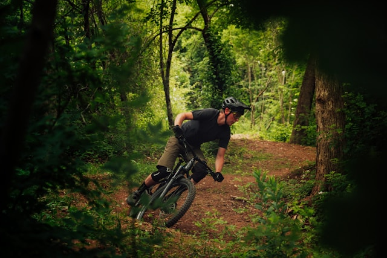

Balans is key
Bij Greenly beschermen en onderhouden we natuurgebieden om een balans te vinden tussen mens en natuur.
Helaas, deze pagina werkt het beste op grotere schermen. Probeer het op een desktop of tablet!
Bij Greenly beschermen en onderhouden we natuurgebieden om een balans te vinden tussen mens en natuur.
Greenly begon met natuuractiviteiten en breidde zich uit door eigen natuurgebieden te beheren. We blijven groeien en bieden onvergetelijke natuurervaringen terwijl we ons inzetten voor natuurbehoud.
Oprichting
Greenly
Greenly werd opgericht met als doel het behouden van natuurgebieden en het bieden van toegankelijke outdoor-activiteiten.
OP 10 mei 2010 ging de eerste georganiseerde wandeling door. Dit was de start van nog vele andere wandelingen.


Eerste
domein

In 2012 openden we ons allereerste natuurgebied in België, een belangrijke mijlpaal die onze passie voor natuurbehoud en avontuurlijke ontdekkingen tot leven bracht.
Voor het onderhoud van ons terrein werkten we samen met enthousiaste vrijwilligers en lokale wandelaars. Bezoekers konden met een kleine bijdrage genieten van alles wat de natuur te bieden had.

Over de
grens
Na intensieve onderhandelingen konden we onze eerste stap zetten op Franse bodem door een prachtig natuurgebied over te nemen. We verkenden de omgeving, ontwierpen wandelroutes en creëerden nieuwe mogelijkheden voor activiteiten, zodat bezoekers optimaal kunnen genieten van de natuurlijke schoonheid.

Bonjour
Frankrijk
Ons eerste park in Frankrijk opende na maanden van voorbereiding. Uitgerust wandel- en fietsroutes en de prachtige rivier dat door het domein stroomt.
Kort na de opening van ons eerste park in Frankrijk, verwelkomde ook het tweede domein zijn eerste wandelaars. Dit natuurgebied, dat al volledig klaar was, biedt direct een serene ontsnapping in de natuur.

Groei
Groen
We introduceerden onze eerste groei-wandelingen, waarbij deelnemers niet alleen konden genieten van de natuur, maar ook actief bijdroegen aan het behoud ervan door bomen te planten en zaden te verspreiden.
Erkenning
Mountainbike routes
Al onze parken werden erkend als officiële mountainbike-bestemmingen, met speciaal ontworpen routes die variëren van uitdagende paden tot ontspannen ritten door het landschap.

Eerder waren er enkel erkende mountainbike routes in ons Belgische domein.
Uitbreiding
Duitsland
In 2019 openden we ons vierde domein in Duitsland, een gebied met zachte heuvels en uitgestrekte loofbossen, ideaal voor rustige wandelingen en natuurobservatie.
Welkom
Duitsland
In 2021 openden we ons vijfde domein in Duitsland. Dit park, gelegen in een prachtige regio , dit biedt bezoekers een unieke ervaring met adembenemende uitzichten en diverse flora en fauna.